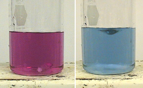

⇾ Students will be
able to understand the difference between soft and hard water &
drawbacks of using hard water.
⇾ Students will be
able to analyse any water sample for its hardness content.
⇾ Standard hard water (1 mg/ml CaCO3 equivalent hardness) (SHW), Unknown hard water sample (HW), boiled hard water sample (BHW), 0.01 M Disodium salt of EDTA, buffer solution (pH = 10), 1% Eriochrome Black T indicator. Measuring cylinder, conical flask, volumetric flask, burette, pipette, dropper, etc.
Clean all the apparatus with water. Pipette out 10 ml of standard hard water into a conical flask. Add 15 ml of buffer solution into it. Mix the solution and add 4−5 drops of the Eriochrome Black T Indicator. Titrate the mixture against the supplied 0.01 M EDTA solution from the burette till the colour of the solution changes from wine red to blue colour. Repeat the titration till you get two constant burette readings. Record the burette volume as V1 ml.
Clean the pipette and the conical flask thoroughly with water. Pipette out 10 ml of the unknown hard water sample into a conical flask. Add 15 ml of buffer solution into it. Mix well and add 4−5 drops of Eriochrome Black T indicator. Titrate the solution in the flask using 0.01M EDTA solution from the burette till the colour of the solution changes from wine red to blue colour. Record the constant burette reading as V2 ml.
Take 250 ml of the water sample in 500 ml beaker and boil it till the volume is reduced to 1/3 of its original volume. Filter and wash the precipitate with distilled water. Collect the filtrate and washings in a 250 ml volumetric flask and make the volume to 250 ml with distilled water. Titrate 10 ml of this sample of water against EDTA. Record the constant burette reading as V3 ml.
The difference between total hardness (A) and permanent hardness (B) gives the temporary hardness (A − B) ppm.
| Disodium EDTA | Eriochrome Black T. |
[Sodium 1−(1−hydroxy−2−naphthylazo)−6nitro−2 naphthanol−4−sulphonate] |
|---|
| Solution in Burette: | 0.01 N EDTA solution |
|---|---|
| Solution in flask: | Std. Hard water (10 ml) + buffer solution (2 ml) |
| Indicator | 1 % EBT |
| End point | Wine red to blue colour |
At, pH = 10
M2+ + EBT ⇾ M-EBT (unstable wine red complex)
M-EBT + EDTA ⇾ M-EDTA (Colourless complex) + EBT (Blue colour)
| Burette Reading | I (ml) | II (ml) | III (ml) |
|---|---|---|---|
| Initial | |||
| Final | |||
| Difference |
| Solution in Burette: | 0.01 N EDTA solution |
|---|---|
| Solution in flask: | Hard water sample (10 ml) + buffer solution (2 ml) |
| Indicator | 1 % EBT |
| End point | Wine red to blue colour |
| Burette Reading | I (ml) | II (ml) | III (ml) |
|---|---|---|---|
| Initial | |||
| Final | |||
| Difference |
| Solution in Burette: | 0.01 N EDTA solution |
|---|---|
| Solution in flask: | Boiled hard water sample (10 ml) + buffer solution (2 ml) |
| Indicator | 1 % EBT |
| End point | Wine red to blue colour |
| Burette Reading | I (ml) | II (ml) | III (ml) |
|---|---|---|---|
| Initial | |||
| Final | |||
| Difference |
10 ml standard hard water = V1 ml EDTA = 10 mg of CaCO3
1 ml of EDTA = (10/ V1 ) mg of CaCO3 hardness.
10 ml of hard water = V2 ml of EDTA.
= V2 × (10/ V1 ) mg of CaCO3 hardness.
1000 ml of hard water = ( 1000 ✕ V2 ) / V1 mg of CaCO3 hardness.
Total Hardness (Htotal) = ( 1000 ✕ V2 ) / V1 mg of CaCO3 hardness. ...(1)
= ________ (A) mg/lit or ppm.
10 ml of hard water = V3 ml of EDTA.
= V3 × (10/ V1 ) mg of CaCO3 hardness.
1000 ml of hard water = ( 1000 ✕ V3 ) / V1 mg of CaCO3 hardness.
Permanent Hardness (Hperm) = ( 1000 ✕ V3) / V1 mg of CaCO3 hardness. ...(2)
= ________ (A) mg/lit or ppm.
From (1) and (2)
Htemp = Htotal - Hperm
= 1000 ✕ [(V2 / V1) - (V3 / V1)]
Htemp = 1000 ✕ [(V2 - V3) / V1] mg/lit or ppm
= _______ mg/lit or ppm.
Water is used for municipal supply and industrial purposes. Water should be free from the impurities or unwanted substances.
Consumption of impure water can cause hazards to the living bodies.
What is meant by hardness of water? Draw the structures of EDTA and EBT.
Why is EBT indicator used for EDTA complexometric titration in determining water hardness?
Why you use pH 10 buffer in EDTA titration?
Which type of Ligand is EDTA?